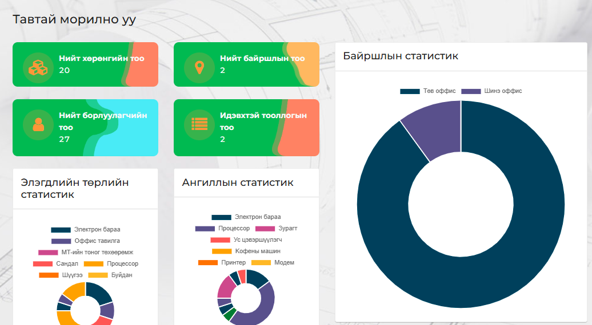
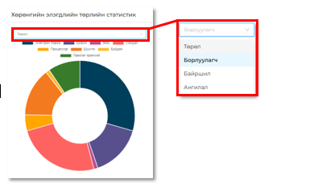

Уг систем нь байгууллагын үндсэн хөрөнгүүдийг бар коджуулан бүртгэн авах бөгөөд дотоод шилжилт хөдөлгөөн, элэгдэл хорогдол, орлого зарлагаа тооцох, тухайн байгууллагын нягтлан болон эд хариуцагчийн ажлыг хөнгөвчлөх зорилготой. Хөрөнгийн удирдлагын системийн тусламжтайгаар хөрөнгийн бүртгэл хийх, элэгдэл тооцох, үнийн өөрчлөлтийг бүртгэх /капиталжуулах/, шилжилт, хасалт хийх /актлах/, тооллого хийх зэрэг бүртгэлийн үндсэн ажиллагааг автоматжуулахаас гадна үндсэн хөрөнгө, тооллого болон элэгдлийн тайлан гаргах боломжтой.

